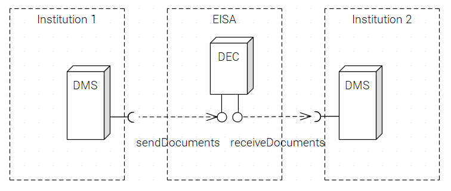
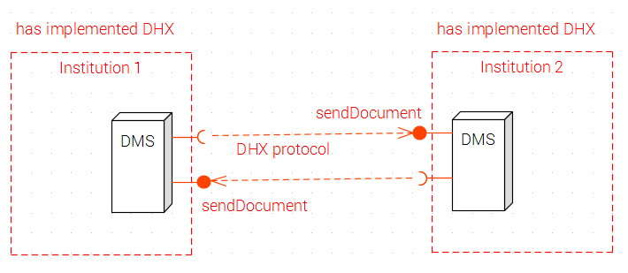
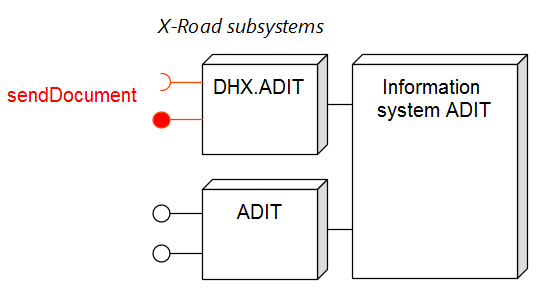
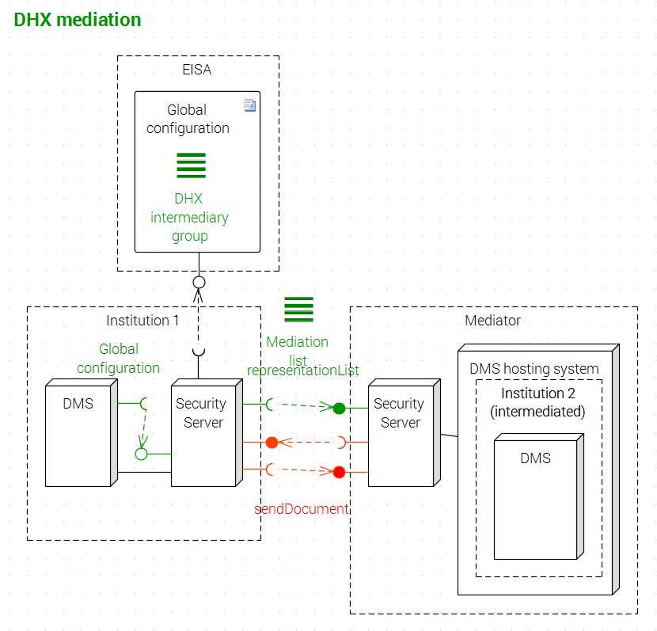
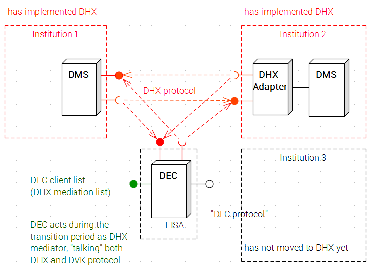

See dokument on saadaval ka eesti keeles.

Document exchange protocol DHX
v 1.0.5
Table of Contents
1 Overview
1.1 Scope of the protocol
1.2 Objective of the document
1.3 Development
1.4 Design aspects
1.5 Extensibility
5 DHX service
5.1 General description
5.2 Development of DHX service
5.3 Opening DHX service
5.4 Name pattern
5.5 Reserved name “DHX*”
5.6 Use of capsule
5.7 Unique identifier
6 Mediation
6.1 Definition of mediation
6.2 List of intermediaries
6.3 Mediation list
7 Sending
7.1 DHX capability
7.2 Identification of direct capability
7.3 Capability through intermediary
7.4 Local address book
7.5 (void)
7.6 Considering a document transmitted
7.7 Re-attempting
7.8 Sending algorithm (informative)
8 Receiving
8.1 Address check
8.2 Notification of wrong address
8.3 Capsule check
8.4 Handling multiple addresses
8.5 Reception from DEC
8.6 Identification of sender
9 Transition
9.1 Transition period
9.2 Functioning of DEC in transition period
Appendix 1 sendDocument specification
Appendix 2 representationList specification
Figures:
Figure 1 Initial situation: document exchange via DEC
Figure 2 Basic scheme of DHX
Figure 3 DHX service mediation
Figure 3a Usage of multiple subsystems
Figure 4 Functioning in transition period
1 Overview
1.1 Scope of the protocol
Document exchange protocol DHX is a standardised technical and organisational solution, enabling institutions to exchange documents, based on a distributed or decentralised principle.
DHX enables the decentralised organisation of electronic document exchange, without the need for a central post-processing unit. Unlike the old document exchange centre (DEC), DHX does not require visiting “the post office” any longer from document management systems (DMS), but ensures the transmission of documents directly from the sender to the recipient.
The protocol does not require individual (bilateral) agreements, configurations, building of interfaces, etc. between institutions that exchange documents. An institution following the protocol may send a document to another institution without previous communication between the two institutions.
DHX is intended mainly for the safe and cost-efficient organisation of the public sector’s document exchange, but the scheme can also be expanded to organisations of private and free sectors.
DHX supports the mediation of a data service (within the meaning of X-Road).
DHX uses the X-Road infrastructure.
The protocol presumes the motivation of the implementing parties for the efficient and safe organisation of document exchange: will of the sender to send documents, and will of the recipient to receive documents.
1.2 Objective of the document
This document specifies the conformity requirements, data formats, the processing and procedural logic for all parties related to the implementation of DHX – institutions implementing DHX, the intermediaries of DHX and the X-Road Centre. It also covers transition from the former DEC-based document exchange to the use of DHX.
1.3 Development
The compilation of the protocol is based on the best practice in protocol specification [RIA-PP].
The protocol has been designed as an open standard.
The Internet Engineering Task Force IETF ([RFC 6852]) has set the following criteria for an open standard:
- due process:
- decisions are made with equity and fairness among participants
- the standards process is transparent
- record of discussions
- public comment period is provided before final approval and adoption
- processes for periodic review and updating are well defined
- broad consensus
- transparency
- balance – standardisation activities are not exclusively dominated by any particular person, company or interest group
- voluntary adoption. IETF has the opinion that success of a standard is determined by the market.
The protocol has been developed by the Information System Authority.
Proposals and recommendations submitted in the report of the analysis conducted in May–June 2016 within the framework of the project „Development of transfer of the document exchange infrastructure to a distributed architecture“ (performed by BPW Consulting OÜ) have been taken into account in the protocol.
Please send any proposals and comments to help@ria.ee or create Issue in this repository.
The protocol can be used with the MIT licence [MIT].
To verify the quality and feasibility of the protocol, a reference implementation has been developed.
Working documents and background information from the protocol development process can be accessed at https://github.com/e-gov/DHX.
1.4 Design aspects
The protocol has been designed based on the business requirements set to a distributed document exchange solution:
- distribution - the solution may not require a central node or any other central components, except options offered by the X-Road infrastructure (the X-Road identification and addressing system, X-Road meta services).
- deliverability - the solution must enable guaranteed delivery of documents to all institutions using X-Road, who adopt DHX.
- addressability - a sender must be able, based on the name of the addressee, to find easily the address, where to send the document.
- security - a sent document must reach the correct addressee and only them.
- fast - time of delivery of the document must be short, not longer than in a DEC solution.
- legal - the solution must meet valid legislation, or realistic proposals are submitted for amending the law.
- simple - the technical implementation must be simple, any development tasks required in DMSs must be performed at a minimum cost.
- low operation costs - the solution may not set an additional system administration burden to DMS administrators.
- enabling the traffic of e-invoices - the solution must retain similar e-invoice processing possibilities as the former DEC.
- agnostic against the document type - the protocol may not set restrictions on the type of exchanged documents, except on the use of the document exchange “capsule“ (see [DHX]).
- minimal - the protocol may not include elements with low significance for the fulfilment of business requirements.
- base layer capacity - it must be possible to establish further agreements on the protocol.
- supporting X-Road version 6 - the protocol must function in X-Road version 6; support of former versions of X-Road is not required.
- smooth transition - the transition to a distributed solution must be planned from a technical as well as organisational point of view; the transition must be smooth; transition risks must be managed with relevant measures.
- satisfaction of statistical need - the information needs of various users of the statistics of the document exchange must be taken into account.
- preservation of convenience - the current convenience of use of DEC for the user must be preserved (may improve) during the use of DHX and the transition period.
A balanced solution is sought in the case of conflicting business requirements.
1.5 Extensibility
Note (informal). Development of the protocol aims to create a stable, long-term solution to concrete, important business needs. Nevertheless, possible change of the business needs and also change in substrata of the protocol (X-Road, document exchange capsule) in the future has to be accounted for. Also, one has to consider that protocol users may have special requirements that cannot be met with general rules, but what can be solved with local agreements by narrower user groups. Therefore, the established good practice is to offer extension mechanisms in data exchange protocols. (see, e.g. [HTML5]).
DHX protocol supports extendability by stipulating one extendability principle and two specific mechanisms:
Principle of layering. Consciously have been avoided solving problems that can be solved more suitably in some other layer of the protocol stack. Also, dependencies from adjoining layers have tried to be minimised - by using only these elements of adjoining layers the use of which is justified.
Versioning. We foresee the possibility that the protocol will be amended or updated in future. Amending must be very infrequent and strongly justified. To allow amending, the protocol is versioned. Semantic versioning pattern [SEMVER] is used. The first officially published version is 1.0.
The system that sends the document MUST specify the version of the DHX protocol used.
User-specific elements in messages. Protocol offers a mechanism for using additional parameters both in query message that sends the document, and in the response message. For specifics see specification of service sendDocument in Appendix 1.
2 Language of requirements
This text, including the appendices, has a normative meaning, except the sections with the note “informative”. The other content of theGitHub repository has an informative meaning.
Words in capital letters must be interpreted as follows (see [RFC 2119]):
“MUST”, “MAY ONLY” – the implementer of the protocol cannot declare conformity to the protocol if the requirement is not fulfilled. “SHOULD” – the requirement must not necessarily be implemented, but the implementation can be considered conforming to the protocol only if there is a sound reason for deviation from the fulfilment of the requirement. “MAY” – a property may be implemented; non-implementation need not be explained.3 Terms and abbreviations
| term | explanation |
|---|---|
| addressee | An institution, to whom the document is intended to be sent. An addressee is unambiguously determined by the registry code of the institution. Synonymous to the word “recipient”. |
| institution | An organisation participating in DHX document exchange. Mainly a public sector institution of Estonia, but can also be a free sector company or organisation. The institution must be entered into the official register (national register of state and local government (RKOARR), commercial register, non-profit associations and foundations register) and must have a registry code. |
| DHX Adapter | Software component that simplifies implementation of the DHX protocol. See https://github.com/e-gov/DHX-adapter. |
| DHX document exchange | Exchange of documents on X-Road pursuant to the DHX protocol. DHX direct implementation Implementation of DHX directly, i.e. without an intermediary. |
| DHX direct implementation | Implementation of DHX directly, i.e. without an intermediary. |
| DHX direct capability | If an institution has created a capability to implement DHX without an intermediary, then the institution has DHX direct capability. |
| DHX implementer | An institution using DHX. |
| DHX implementation | The use of DHX, fulfilling all conformity requirements of DHX. DHX may be implemented directly or via an intermediary. |
| DHX capability through intermediary | The use of DHX via an intermediary. See DHX direct implementation. |
| DHX capability | The capability of an institution to send and receive documents according to the DHX protocol. DHX capability can be executed directly (see DHX direct capability) or via an intermediary (see DHX capability through an intermediary). |
| DHX service | The X-Road service with a standard name pattern EE/GOV/, through which a direct implementer or intermediary of DHX receives documents. |
| DHX mediation | The usage pattern of X-Road, where an X-Road member with the role of an intermediary (DHX intermediary) enables an institution to access the DHX document exchange via their information system. See DHX direct implementation. |
| DHX intermediary, longer term DHX document exchange service intermediary, shortly intermediary | An X-Road member who provides service to an institution, mediating DHX document transmission. Typically, a provider of the DMS cloud or an accommodation service; may be a service provider of the private sector or institution of the public sector, providing service to another institution. |
| DHX intermediary group | Technical means for maintaining the list of DHX intermediaries. The DHX intermediary group is part of the X-Road global configuration. |
| DHX intermediary list | List of intermediaries of the DHX document exchange service maintained by the X-Road Centre (RIA). |
| DHX reference implementation | A software system developed by RIA for the purpose of verification of implementability of the protocol. Reference implementation also serves as a demo for implementors and can be used for testing other implementations. https://github.com/e-gov/DHX-etalon |
| DMS cloud service | Relationship, whereby one organisation (a company or another institution) provides an institution with the DMS technical environment. There may be several “virtual” DMSs in one technical environment. For example, the Ministry of Economic Affairs and Communications provides a DMS service to institutions under the administration of the ministry; the Information System of Estonian Schools (EKIS) provides the DMS service to several kindergartens. DMS cloud service and DHX mediation may be joined, but are still separate terms. Accommodation provider may not always be an intermediary. There is a mediation relationship, when X-Road traffic takes place with the certificate of the intermediary. |
| document | A document processed in an institution within the meaning of document management in the Estonian public sector. May include several files. Transmitted in a capsule of electronic document exchange. |
| document management system, DMS | An information system for electronic document management within an institution, incl. for servicing document exchange. |
| capsule of electronic document exchange | “Capsule” in short – XML structure containing document and metadata. |
| global configuration | A set of X-Road metadata, list of members, subsystems and groups of X-Road. See [PR-GCONF], [PR-META]. |
| DEC | Document Exchange Centre [DEC]. |
| RIA | Information System Authority. |
| registry code | The official registry code of an institution, e.g. 70002093 Kadriorg kindergarten. |
| receiving system | An information system receiving a document on X-Road according to the DHX protocol (may be also an information system of an intermediary and DEC in the transition period). |
| consignment | A document that the sending system tries to send to the receiving system. Several attempts are made in the case of failure. |
| consignment id | A unique identifier assigned to the series of attempts to send a document. See 7.7. |
| receiver | An institution, to whom the document has been addressed. Has a similar meaning with the word “addressee”. In the case of mediation, also an intermediary can be considered a receiver. It must always be clear from the text which one is meant. See "sender". |
| sender | An institution sending a document; the sender may use an intermediary. In the case of mediation, also an intermediary can be considered the sender. It must always be clear from the text which one is meant. See “receiver”. |
| sending system | An information system sending a document on X-Road according to the DHX protocol (may also be an information system of an intermediary). |
| service identifier | An X-Road service identifier under the requirements of X-Road [X-Road] version 6. Uniquely identifies the X-Road service both on the Estonian X-Road and in the international network of X-Road implementations. Consists of an X-road member identifier, a service code denomination and an optional version number. For example: EE/GOV/70003158/DHX/sendDocument. |
| intermediary | See “DHX intermediary”. |
| intermediated | An institution, who has created DHX capability via an intermediary. Does not participate in DHX document exchange on X-Road with their certificate, but uses the service of an intermediary. |
| mediation list | The list of institutions mediated by an intermediary of the DHX document exchange service, offered by them on X-Road as a service. Do not confuse with the DHX intermediary list. |
| transition period | The period of transition from the use of Document Exchange Centre (DEC) to the use of DHX. The X-Road Centre specifies the beginning and the end of the period. |
| X-Road Centre | X-Road administrator. RIA has the role of the X-Road Centre. The X-Road Centre registers the X-Road sybsystems “DHX” and maintains the DHX intermediary list. |
4 Initial situation
Currently, DMSs exchange documents via DEC, by using the tentatively named “DEC protocol”. The “DEC protocol” is determined by the list of electronic data exchange meta data [Capsule], the specification of DEC interfaces [DEC specification ] and [DEC maintenance procedure], and, in a broader context, “Common Principles of Administrative and Records Management Procedures” [AÜK]. To a smaller degree, document exchange interfaces have also been established between other information systems that process documents. These interfaces have not been standardised. The extending document circulation and the tightening network of information systems that exchange documents (modern document exchange is not limited to the so-called pure DMSs – documents are also exchanged by information systems, where document management in the traditional meaning is simply one type of data processing) call for an alternative to the document circulation occurring via a central mailbox server.

Figure 1. Initial situation: document exchange via DEC
5 DHX service
5.1 General description
The DHX service is an X-Road service with a standard name pattern and processing logic, enabling an institution to send documents to another institution.

Figure 2. Basic scheme of DHX
The use of the DHX service is an interaction, where two messages are sent:
- the sender of the document sends an X-Road query message (query) to the service sendDocument
- the receiver of the document sends a response message, confirming the receipt of the document.
If a document has been incorrectly addressed or formed, a relevant error message is sent in the response message.
A document is transmitted in the query message.
Documents are transmitted with the push method. The sender of the document initiates sending by addressing the sendDocument service of the addressee.
5.2 Development of the DHX service
An institution implementing DHX (or their DMS mediation service or DMS accommodation service provider) MUST develop the DHX service in their DMS and operate it.
The protocol does not exclude situations, where only a sending or receiving capability meeting the requirements of DHX protocol is established in DMS. Technically, there are no constraints. As the business need of such asymmetric solutions is unclear, proceeding from the objective to maintain simplicity, the protocol does not specify separate profiles for the systems limited to sending or reception.
Institution implementing DHX CAN build DHX capability into more than one of its information systems.
DHX service performed by a DHX implementer MUST meet the detailed specification provided in Appendix 1.
5.3 Opening a DHX service
An institution implementing DHX MUST open the DHX service to all institutions with whom they want to exchange documents. If an institution does not want to open a DHX service to all members of X-Road due to security policy or other reasons, they MAY open a DHX service to specific members of X-Road (with granting access rights in the X-Road security server).
DHX is intended primarily as a universal document exchange agreement.
For the transition period, DHX service MUST be opened also to DEC.
DEC transmits documents from institutions who have not yet established DHX capability.
5.4 Name pattern
The name of the DHX service MUST follow the pattern EE/<member class>/<registry code>/<DHX*>/sendDocument, wheres
- EE is the name of the Estonian X-Road instance;
- <member class> is the member class of X-Road (depending on the legal form of the intermediary, either GOV or PRI);
- <DHX*> is the name of the X-Road subsystem ensuring detection of the service, fixed with this protocol in form DHX*, i.e. three inital symbols of the name MUST be DHX. Fixed initial symbols MAY be followed by more symbols, i.e. name MUST begin with DHX, but CAN be longer. If institution employes DHX only in one information system (in institution's DMS), then DHX is sufficient for X-Road subsystem name. However, if institution wants to employ DHX in more that ine information system., then different sybsystem names MUST be chosen.
- <registrikood> is the registry code of the institution.
EE/GOV/70003158/DHX/sendDocumentEE/GOV/70000906/DHX.viru/sendDocument (Viru Regional Prosecutor's Office)EE/GOV/70000906/DHX.laane/sendDocument (Lääne Regional Prosecutor's Office)(Regional Prosecutor's Offices are not independent institutions but subunits of Prosecutor's Office.)
5.5 Reserved name DHX*
DHX service MUST use the X-Road subsystem name DHX*, where * is a sequence of symbols that can be empty. The X-Road Centre MAY NOT register the subsystem “DHX” of any institution for another purpose
If institution employs DHX only in one of its information systems (in institution's DMS), then X-Road subsystem name code>DHX SHOULD be used (and not a longer name).
Note (informative). Information system may provide services other than DHX document exchange under subsystem name DHX*. Nevertheless, wider use of the name DHX can cause a need for unnecessary communication or even confusion. Therefore, if information system has besides DHX protocol data traffic other data traffic in X-Road, then it can be suitable to bind more than one X-Road subsystem to the information system.
For example, figure 3a represents an information system - ADIT - that is bound to two X-Road subsystems: 1) DHX data traffic flows through DHX-ADIT; 2) other X-Road services are provided and consumed through ADIT.
Usage of multiple subsystems does not cause additional costs (no separate sertificates are needed). Subsystems can be viewed as logical access points or gates.

Figure 3a Use of multiple subsystems
5.6 Use of capsule
Document MUST be transmitted in a “capsule” complying with the officially confirmed list of digital data exchange metadata [Capsule].
The registry code of the addressee-institution is also forwarded in the capsule of the document.
The table below provides a commented list of elements of the capsule affected by the adoption of DHX. The complete specification of elements of the capsule is provided in [Capsule].
| element | meaning upon use of DHX |
|---|---|
| Transport 1. DEC Sender | Transport 1. Sender of the document |
| Transport 2. DEC Receiver | Transport 2. Receiver of the document |
| XI DEC document metadata | n/a |
5.7 Unique identifier
The sending system MUST assign a unique identifier to the series of attempts to send document (consignment id). (See also Section 7.7 Re-attempting).
6 Mediation
6.1 Definition of mediation
In the case of mediation, an intermediary provides the service of sending and receiving documents on X-Road to an institution. The institution does not communicate with X-Road in the DHX context themselves. The institution even need not to be an X-Road member. The intermediary uses their name on X-Road. An intermediary may be a company of private sector as well as an institution of public sector.
An institution MAY implement DHX directly (i.e. independently) or via an intermediary
Note (informative). Mediation differs from accommodation. Many institutions accommodate their DMSs at the providers of accommodation and cloud services. Accommodation may cover the accommodation of the X-Road security server as well as DMS (provision of cloud service). From the standpoint of DHX, it is important whether DMS of an institution communicates on X-Road using the X-Road certificate of the institution or not. All relationships, where communication on X-Road takes place with the X-Road certificate of the service provider instead of the X-Road certificate of the institution, are considered mediation.
In the case of accommodation, fulfilment of the requirements of this protocol must be ensured the upon implementation of DHX. The method depends on the specific relationship between the accommodation service provider and the institution, and is not covered by the scope of this protocol.
Upon the mediation of DHX, an intermediary develops the DHX service, opens it to other institutions and then operates it. Figure 3 includes the scheme of interaction principles in the case of mediation.

Figure 3 Mediation of DHX service
Requirements proceeding from the X-Road regulation are set to mediation: obligation to register on X-Road as an intermediary, obligation to develop and publish the procedure (policy) for data service mediation, etc. (see [X-Road regulation] § 13).
6.2 List of intermediaries
Upon the implementation of DHX via an intermediary, the institution MUST conclude a contract with the DHX intermediary. They MAY ONLY use the intermediaries entered into the list of DHX intermediaries by the X-Road Centre.
The list of intermediaries is the list of intermediaries of the DHX document exchange service.
The list of intermediaries is maintained by the X-Road Centre (RIA).
Technically the list of intermediaries is executed as a DHX intermediary group. DHX intermediary group is part of the X-Road global configuration. As such, the list of intermediaries is available to all X-Road members.
An institution or a company intending to operate as an intermediary MUST register themselves on X-Road as intermediaries. Specific registration procedure is established by the X-Road Centre.
The X-Road Centre MUST maintain an updated list of DHX intermediaries.
6.3 Mediation list
The mediation list is a list of institutions mediated by an intermediary and maintained by an intermediary.
An intermediary MUST maintain mediation list.
Vahendaja PEAB hoidma vahendusnimekirja autentsena ja ajakohasena.
An intermediary MUST keep the mediation list authentic and updated. Authenticity means that the mediation list must present mediation relationships correctly and completely. Updating means that the mediation list must present all valid mediation relationships at every given moment.
The mediation list MAY include information about expired or future mediation relationships (presented with fields startDate and endDate).
An intermediary MUST make the mediation list available as an X-Road service.
The name of the mediation list service MUST follow the pattern EE/<member class>/<registry code>/DHX/representationList, where
- EE is the name of the Estonian X-Road instance
- <liikmeklass> is a member class of X-Road (value according to X-Road protocol – depending on the legal form of intermediary, either GOV, COM, NGO or NEE)
- DHX is the name of X-Road subsystem ensuring the detection of the service, fixed with this protocol, and
- <registrikood> is the registry code of the institution.
Example: EE/COM/40001111/DHX/representationList
The mediation list service provided by a DHX implementer MUST meet the detailed specification provided in Appendix 2.
7 Sending
7.1 DHX capability
The sending system MUST find out if the adressee has DHX capability.
DHX capability may be a direct capability or capability through an intermediary.
7.2 Identification of direct capability
Direct capability MUST be identified as a first priority (before the identification of capability through an intermediary).
The sending system SHOULD determine direct capability, based on the global configuration file of X-Road.
The availability of the DHX subsystem in the institution is the marker of direct capability.
The global configuration MAY BE downloaded from the X-Road Centre, or the global configuration file downloaded by the X-Road security server, offered by the security server interface, MAY BE used.
If the sending system considers the identification of DHX direct capability based on the global configuration file of X-Road technically too complicated, direct capability MAY BE also checked with a direct sending attempt.
If the security server answers that the addressee does not have a DHX subsystem, it can be concluded that the addressee is lacking DHX direct capability.
The security server of the sender downloads periodically information about the X-Road configuration from the X-Road central server [PR-GCONF], including information about the subsystems and security servers specified by the X-Road members. Based on this configuration information, security server of the sender determines whether the addressee has specified the DHX subsystem. If not, then DHX capability is lacking.
If the addressee has direct capability, the document MUST BE sent directly to the addressee.
7.3 Capability through intermediary
When direct capability is lacking, the sending system MUST check whether the addressee has DHX capability through an intermediary.
In order to check DHX capability through an intermediary, the sending system MUST:
- download the X-Road global configuration file from the X-Road Centre or use the global configuration file downloaded by the security server;
- find the list of intermediaries in the file (DHX intermediary group);
- check all intermediaries and request mediation lists via X-Road;
- find out whether the addressee is included in the mediation lists;
- check the validity of mediation relationship (with fields startDate and endDate of the response message of the service representationList).
If the addressee has no DHX direct capability, but has DHX capability through an intermediary, the sending system MUST send the document to the intermediary.
7.4 Local address book
The sending system MAY buffer the result of identification of DHX capability, forming a so-called local address book. It MUST be possible to configure the updating period of the buffer (local address book).
7.5 (void)
7.6 Considering a transmitted document
The sending system MUST consider the transmitted document, when the response message with a positive response code has been received from the sendDocument service.
A confirmation of receipt of the document is sent in the response message of a request-response message pair of X-Road. If the parties need confirmations of higher level business logic layer, these can be realised outside the DHX protocol or as cover layer of DHX protocol.
7.7 Re-attempting
If contact is not established with the addressee or no confirmation of receipt is received, sending MUST BE attempted again after some time.
In order to minimise the number of void queries, the exponential back-off algorithm [EXP] SHOULD be used.
The number of sending attempts MUST be finite and possible to determine in the configuration of the sending system.
7.8 Sending algorithm (informative)
The following sending algorithm illustrates a possible way of performing the sending of a document programmatically. The constructions of Go language [GOLANG] have been used in the algorithm. The algorithm has an informative meaning. The implementer of the protocol may fulfil the sending requirements in a way chosen by themselves. The algorithm does not cover the preparation of a capsule.
- Function
adresseeHasDirectDHXCapabilityfinds out, using X-Road global configuration, whether institutionahas DHX direct capability. - Function
adresseeUsesIntermediaryfinds out, using X-Road groupDHX intermediariesand X-Road servicesrepresentationListof the intermediaries, whether institutionauses DHX intermediary. - Function
trySendtries to send documentdto servicesendDocumentof subsystemDHXof X-Road memberrecipient. If sending succeeds, then returnstrue. - Function
intermediaryRegistryCodefinds registry code of the intermediary of institutiona. - Function
sendDocumentcalls abovementioned functions and arranges sending of documentdto adressee with registry codea. Three sending attempts are made, second attempt is made an hour after the first; the third attempt is made 24h after the second.
function sendDocument(d Document, a Registry Code) {
var recipient // institution to whom delivery attempt(s) will be made (can be intermediary)
var attempt = 0 // delivery attempt
var maxAttempts = 3 // value must be configurable
if adresseeHasDirectDHXCapability(a) {
recipient = a
} else if adresseeUsesIntermediary(a) {
recipient = intermediaryRegistryCode(a)
} else {
return "Delivery not possible"
}
for attempt < maxAttempts {
attempt = attempt + 1
if attempt == 2 {
time.Sleep(time.Hour)
} else if attempt == 3 {
time.Sleep(24 * time.Hour)
}
if trySend(d, recipient) {
return "Delivery successful"
}
}
return maxAttempts + " attempts, all failed"
}8 Receiving
8.1 Address check
The receiving system MUST check that the document has been sent to the correct address.
In the case of mediation, the receiving system MUST check whether the addressee is a customer of the intermediary (entered into the mediation list).
8.2 Notification of a wrong address
In the case of an incorrectly addressed document, the receiving system MUST send error message Wrong address to the sender.
8.3 Capsule check
The receiving system MUST check that document has arrived in a proper capsule. The check MUST include at least checking the compliance with the XML scheme. In the case of a defective capsule, a relevant error message Defective capsule MUST be sent.
The receiving system MAY perform additional checks on semantic or business logical level.
8.4 Handling multiple addresses
If sender DMS wants to send a document to multiple adressees (institutions with direct DHX capability or represented institutions), then it MUST send the document to each addressee separately, by separate DHX sendDocument service invocation.
Note (informative). In sending the capsule, only parameters memberCode and recipient of the DHX sendDocument service are used for addressing. Additional adressees defined in the capsule are only of informative value in sending the DHX document (similar to CC field in a received e-mail message). Sending DMS must not presume that adressee of direct DHX capability will pass on the message to other adressees specified in the capsule. Mediator is responsible only for delivery of the capsule to addressee that is specified in recipient element of the sendDocument service. Mediator is not responsible for delivery of the message to other adressees that are specified in the capsule.
8.5 Reception from DEC
In a transition period, a system having established DHX capability MUST receive documents also from DEC.
Technically this means that the system having transferred to DHX must open their DHX service also to DEC. DEC transmits documents from the institutions who have not yet transferred to DHX.
8.6 Identification of sender
Sender of the document can be identified in two ways: 1) using metadata describing the sender, included in the document capsule; 2) using X-Road header fields client [PR-MESS] and representedParty [X-EXT] of X-Road query message.
representedParty [X-EXT].The receiving system MUST check the consistency of metadata describing the sender included in the document capsule and X-Road header fields client and representedParty of X-Road query message. In the case of discrepancies, the document MUST be rejected.
Upon the receipt of a document from an intermediary it MUST be checked whether the intermediary has been entered into the list of intermediaries. Check result MAY be buffered.
9 Transition
9.1 Transition period
Transition to the DHX protocol takes place in a predetermined period of time. The transition period will start for all institutions simultaneously. The X-Road Centre will announce the beginning of the period. The transition period will end with the termination of DEC operations.
In the transition period, institutions will develop in their DMSs the capability to send and receive documents under the DHX protocol. In technical terms, “DHX capability” refers to the provision of the X-Road service under the DHX protocol and the capability to connect to an equivalent service of other institutions
DHX capability does not emerge simultaneously in institutions, because developments are completed at different times. Figure 4 explains co-functioning of the systems transferred and not yet transferred to DHX in the transition period.

Figure 4. Functioning in the transition period
Institutions 1 and 2 have transferred to the DHX protocol and exchange mutually documents directly via DHX. Institution 3 is still using the old “DEC protocol”.
In the transition period, DEC performs the function of a translator between the new and old protocols (DHX and DEC), operating as a DHX mediator - for these DEC clients who have neither attained DHX direct capability yet nor chosen another DHX mediator.
DHX Adapter is the “universal software component” developed by RIA, the objective of which is to simplify the re-tuning of DMSs to the use of DHX. The use of DHX Adapter is not obligatory.
In the transition period, as soon as the DMS of an institution has developed the DHX capability (when the development is finished), the institution MUST start, at the earliest opportunity, using the DHX service for sending documents.
If it turns out in the transition period that the addressee has not created a DHX service for receiving documents (i.e. the service cannot be found on X-Road), then the document MUST BE sent via DEC by using the DEC service sendDocument and marking the addressee in the capsule of metadata of the document.
An institution having achieved DHX capability MUST quit using DEC.
9.2 Functioning of DEC in the transition period
DEC will be kept in operation throughout the whole transition period. DEC will be implemented with necessary functionality, so it would be operational during the transition period.
DEC provides the service sendDocument, which the institution that has created the DHX capability can use to forward the document to an institution that has not yet established the DHX capability. The forwarding is performed by DEC.
In the transition period, DEC will function as a DHX service intermediary (RIA will be added to the list of intermediaries).
DEC will publish a list of clients (representees) served during the transition period, according to this protocol (by representationList service).
In case a document which has been addressed to an institution that has established the DHX capability is received by DEC, DEC will attempt to immediately forward it.
DEC will be switched off when all DEC institutions have established the DHX protocol capability or upon expiration of the term of the transition period.
10 Conformance criteria
This section summarises the conformance criteria (see e.g. RFC 2049), which must be met before a document exchange system can be declared DHX compliant.
The following list is limited to software technical measures and technical parameters of systems ensuring interoperability. Parties and coordinators of document exchange may establish various (additional) organisational measures for organising DHX document exchange. These are not in the scope of the protocol.
10.1 Conformance criteria for all DHX document exchange systems
| section | criterion |
|---|---|
| 1.5 | System that sends the document MUST specify the version of DHX protocol. |
| 5.2 | An institution implementing DHX (or their DMS mediation service or DMS hosting service provider) MUST develop and operate the DHX service in their DMS |
| 5.2 | DHX service performed by a DHX implementer MUST meet the detailed specification provided in Appendix 1. |
| 5.3 | An institution implementing DHX MUST open DHX service to all institutions, with whom they want to exchange documents. If an institution does not want to open the DHX service to all X-Road members due to security policy or other reasons, they MAY open DHX service to specific X-Road members (with granting access rights in the X-Road security server). |
| 5.3 | For the transition period, DHX service MUST be opened also to DEC. |
| 5.4 | Name of the DHX service MUST follow the pattern EE/<member class>/<registry code>/<DHX*>/sendDocument. |
| 5.5 | DHX service MUST use X-Road subsystem with name DHX*, where * is sequence of symbols, that can be empty. |
| 5.6 | Document MUST be transmitted in a “capsule” complying with the officially confirmed list of digital data exchange metadata. |
| 5.7 | The sending system MUST assign a unique identifier to the series of attempts to send a document (consignment id). |
| 6.2 | Upon the implementation of DHX through an intermediary, the institution MUST conclude a contract with the DHX intermediary. They MAY ONLY use the intermediaries entered into the list of DHX intermediaries by the X-Road Centre. |
| 7.1 | The sending system MUST find out whether the addressee has DHX capability. |
| 7.2 | Direct capability MUST be identified as a first priority (before the identification of capability through the intermediary). |
| 7.2 | The sending system SHOULD determine direct capability, based on the X-Road global configuration file. |
| 7.2 | If the addressee has direct capability, document MUST BE sent directly to the addressee. |
| 7.3 | In order to check DHX capability through intermediary, the sending system MUST: a) download the X-Road global configuration file from the X-Road Centre or use the global configuration file downloaded by the security server; b) find the list of intermediaries in the file (DHX intermediary group); c) check all intermediaries and request the mediation lists via X-Road; d) find out whether the addressee is included in the mediation lists. |
| 7.3 | If the addressee has no DHX direct capability, but has DHX capability through an intermediary, the sending system MUST send document to the intermediary. |
| 7.4 | It MUST be possible to configure the updating period if buffer (local address book) is used. |
| 7.5 | If the sending system has found out that the addressee has no DHX capability in the transition period, the sending system MUST attempt to send document to the DEC sendDocument service. |
| 7.6 | The sending system MUST consider document transmitted, when response message with positive response code has been received from sendDocument service. |
| 7.7 | If contact is not established with the addressee or no confirmation of receipt is received, sending MUST BE attempted again after some time. |
| 7.7 | In order to minimise the number of void queries, the exponential back-off algorithm [EXP] SHOULD be used. |
| 7.7 | SThe number of sending attempts MUST be final and possible to determine in the configuration of the sending system. |
| 8.1 | The receiving system MUST check that the document has been sent to the correct address. |
| 8.1 | In the case of mediation, the receiving system MUST check whether the addressee is a customer of the intermediary (entered into the mediation list). |
| 8.2 | In the case of an incorrectly addressed document, the receiving system MUST send the error message Wrong address to the sender. |
| 8.3 | The receiving system MUST check that the document arrived in a proper capsule. |
| 8.3 | The check MUST include at least checking the compliance with the XML scheme. |
| 8.3 | In the case of defective capsule, the relevant error message Defective capsule MUST be sent. |
| 8.4 | If sender DMS wants to send a document to multiple adressees (institutions with direct DHX capability or represented institutions), then it MUST send the document to each addressee separately, by separate DHX sendDocument service invocation. |
| 8.5 | In a transition period, a system having established DHX capability MUST receive documents also from DEC. |
| 8.6 | The receiving system MUST check the consistency of metadata describing the sender included in the document capsule and X-Road header fields client and representedParty of X-Road query message. In the case of discrepancies, the document MUST be rejected. |
| 8.6 | Upon the receipt of a document from an intermediary it MUST be checked whether the intermediary has been entered into the list of intermediaries. Check result MAY be buffered. |
| 9.1 | In the transition period, as soon as the DMS of an institution has developed the DHX capability (when the development is finished), the institution MUST start, at the earliest opportunity, using the DHX service for sending documents. |
| 9.1 | If it turns out in the transition period that the addressee has not created a DHX service for receiving documents (i.e. the service cannot be found on X-Road), then the document MUST BE sent via DEC by using the DEC service sendDocument and marking the addressee in the capsule of metadata of the document. |
| 9.1 | An institution having achieved DHX capability MUST quit using DEC. |
10.2 Criteria for systems of intermediaries
| section | criterion |
|---|---|
| 6.2 | An institution or a company intending to operate as an intermediary MUST register itself on X-Road as intermediary. |
| 6.3 | An intermediary MUST maintain a mediation list. |
| 6.3 | An intermediary MUST keep the mediation list updated. |
| 6.3 | An intermediary MUST make the mediation list available as an X-Road service. |
| 6.3 | The name of the mediation list service MUST follow the pattern EE/<member class>/<registry code>/DHX/representationList. |
| 6.3 | Mediation list service provided by a DHX implementer MUST meet the detailed specification provided in Appendix 2. |
References
[AÜK] Government Regulation “Common Principles of Administrative and Records Management Procedures”, https://www.riigiteataja.ee/akt/130122011062?leiaKehtiv.
[DEC maintenance procedure] Document Exchange Centre Maintenance Procedure. Information System Authority. https://www.ria.ee/dokumendivahetus.
[DVK pidamise kord] Dokumendivahetuskeskuse pidamise kord. Riigi Infosüsteemi Amet. https://www.ria.ee/public/dvk_kord.pdf.
[DEC specification] Document Exchange Centre (DEC). Interface specification 1.6.0. https://svn.eesti.ee/projektid/dvk/doc/dvk_spetsifikatsioon_1.6.0.odt.
[DH metadata] Records Management Metadata. List 3.0. The Ministry of Economic Affairs and Communication. https://www.mkm.ee/sites/default/files/dokumendihalduse_metaandmed.pdf.
[EXP] Exponential backoff. https://en.wikipedia.org/wiki/Exponential_backoff.
[GOLANG] The Go Programming Language. https://golang.org/.
[HTML5] HTML 5. Section 1.5.3 Extensibility. https://www.w3.org/TR/html/.
[Capsule] List of digital data exchange metadata 2.1. Information System Authority. https://riha.eesti.ee/riha/main/xml/elektroonilise_andmevahetuse_metaandmete_loend/1.
[MIT] MIT License. https://github.com/e-gov/DHX/blob/master/LICENCE.txt.
[PR-GCONF] X-Road Protocol for Downloading Configuration.
[PR-META] X-Road Service Metadata Protocol.
[PR-MESS] X-Road Message Protocol v4.0
[RIA-PP] Protocol Specification Best Practice. Information System Authority. 2015.
[RFC 2119] Key words for use in RFCs to Indicate Requirement Levels.
[RFC 2049] RFC 2045 Multipurpose Internet Mail Extensions (MIME) Part One: Format of Internet Message Bodies.
[RFC 6852] RFC 6852 Affirmation of the Modern Paradigm for Standards.
[SEMVER] Semantic Versioning.
[UG-SIGDOC] X-Road: Signed Document Download and Verification Manual.
[X-EXT] X-tee v6 sõnumiprotokolli kolmanda osapoole esindamise laiendus, https://www.ria.ee/public/x_tee/Third_party_representation_extension_v1.0.0.pdf.
[X-Road] Data Exchange Layer X-Road, https://www.ria.ee/x-tee/.
[X-Road regulation] Government Regulation “Data exchange layer of information systems” (draft 09.03.2016).
Appendix 1 sendDocument specification
Specification is in separate document (in Estonian).
Appendix 2 representationList specification
Specification is in separate document.
Appendix 3 Change history
| version, date | change |
|---|---|
| 1.0.5, 11.11.2016 | Added fault code DHX.UnsupportedVersion in service sendDocument. See Proposals |
| 1.0.4, 26.10.2016 | Terms 'DHX Adapter' and 'DHX reference implementation' added. |
| 1.0.3, 07.08.2016 | Amendment to parameters of the representationList service. See: Proposal 07 |
| 1.0.2, 05.09.2016 | Added (section 5.5) informative note about the use of multiple subsystems. See: Proposal 04 Amended optional parameter recipientSystem to service sendDocument. See: Proposal 05Service representationList made extensible. See: Proposal 06
|
| 1.0.1, 30.08.2016 | Detailed sending to multiple adressees. See: Proposal 03 |
| 1.0, 23.08.2016 | First published version. Added name pattern to support the use of multiple DMS-es. See: Proposal 02 |